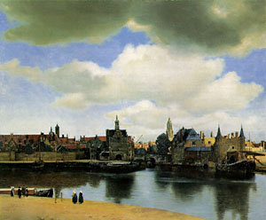
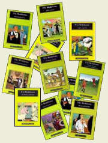

Si la "Agenda Cultural" de La Nación no se equivoca, esta noche está Liliana Herrero en Plaza Irlanda, gratis (aunque no suena muy confiable: porque a las 22:30 figura en otro lugar, con Iaies...).
 Finalmente conseguí (y a precio bajo) una reproducción de esas que no llevan vidrio adelante; y de Vermeer, para mejor. Bien!
{kind=link}
Como curiosidad de estetas:
esta Vista de Delft era muy admirada por Proust ;
y según dicen (no he leído nada de Proust) un personaje
suyo muere murmurando algo sobre una partecita del cuadro
que había impresionado mucho al autor: ese pedacito
de pared amarilla a la derecha, el edificio que se encuentra
a la izquierda de las dos torres y a la derecha del tejado azul.
Esto que cuenta el P. Jim (cura yanqui con buen weblog: Dappled Things), y que aparece relatado en un periódico es todo un símbolo de la "derecha católica": el C.U.M, un grupo de los consabidos guardianes de la ortodoxia, los salvadores de la Iglesia, que mandan cartas amenazadoras a todos los curas de la diócesis (además de desparramar panfletos maledicientes en parabrisas de los parroquianos...) : "o enseñan la verdadera doctrina católica: infierno, arrepentimiento, moralidad sexual, cruz y virtud heroica... o ya van a ver". Los defensores del Magisterio... que se deseseperan porque los curas no enseñan ... a los demás (ellos no tienen nada que aprender, es claro). De estos especímenes los hay en todas las épocas, lugares... y religiones.
Por acá tenemos a los de Panorama Católico, una revista para esos religiosamente-resentidos ;
se parecen (los opuestos están en el mismo plano) a los de Página
12 ; y -como los otros- uno a veces duda de que se tomen en serio
(«vos querés escribir acá ? vos querés ser de los nuestros ?
ponete esta camiseta, y pateá siempre para allá»).
Una muestra: el "análisis" de la crisis de la Iglesia (todo se cifra en los grandes tres hitos
de la vida eclesial del siglo XX : .... 1) la condena al modernismo de Pío X
-aplausos entusiastas- , 2) el Concilio Vaticano II -mmmm. ... - y 3) ...
.... .... .... la condenación de Maurras !!!! ).
Puaj. La autoindulgencia, la estrechez de alma (la imbecilidad, en suma)
son de por sí odiosas;
pero cuando se visten de celo religioso, es de lo más asqueante
que hay.
Para mí, al menos. (Pero -mirá vos- yo creo
que para Jesús también).
Robert Bresson filmó "El proceso de Juana de Arco" en 1962. (no confundir con la modernosa de Luc Besson, 1999). El guión se atiene a las actas del proceso. Película seca, ultra austera; si no me equivoco, bellísima.
Esto que sigue es un texto del mismo Bresson.
-
El cinematógrafo tiene el privilegio de hacer
revivir el pretérito.
El verano pasado, mientras rodaba mi film "El proceso de Juana de Arco" , no me preocupaba únicamente por hacer resonar palabras sublimes; tenia, además, la esperanza de dar actualidad a la maravillosa doncella.
De repente en Chinon, lejos de sus padres, Juana se convierte en la compañera de los más grandes señores de la corte -de quienes será jefe militar, a los que enseñará paradójicamente la artillería-. Es elegante -éste es uno de los reproches de la acusación-. Cabalga soberbios caballos. Su nobleza, auténtica nobleza, procede directamente de la tierra, pero Juana no es -o ya no es- la pequeña aldeana torpe que cinco siglos de historia han aceptado.
El repique de las campanas de Reims suena aún en sus oídos cuando cae prisionera y la vemos ante sus Jueces, recapitulando el camino recorrido y considerando dónde la llevaron sus Voces, desde Domremy hasta esa celda del castillo de Ruán en la que permanece sujeta por un tobillo.
La adorable, la admirable, se imagina que irán a liberarla. Pone al mal tiempo buena cara, pero sus nervios la abandonan, y firma un acta pública de abjuración (con la misma cruz convencional con la que, durante las batallas, aconsejaba a los que escribía que no la obedecieran).
Antes del primer contacto atroz con el fuego dijo: «las Voces que oí eran de Dios, todo cuanto hice, lo hice por Su mandato».
Naturalmente, no es necesario inventar o explicar. Juana es la cifra de una operación misteriosa. La doncella prueba que existe un mundo cerrado para los hombres, pero se abre para ella gracias a una ingenua alquimia de sus sentidos. Saca a la luz la noche profunda en la que nuestros actos se realizan de ordinario.
«Tengo la voluntad de creer». Esta respuesta me impresionó como la más extraña entre otras respuestas más célebres. Por su sentido y por el riesgo que la acusada asume en ella, a fin de "limpiar su conciencia", frente a unos jueces de pocos alcances y a una posteridad generalmente denigradora.
Otro prodigio, prodigio de heroísmo que puede asombrar a nuestra época: Juana sacrifica su vida al sentido de su vida. De la duda que le inculcan, más criminal aún que el fuego; de la analogía de su pasión con la Pasión de Cristo; del abandono, la agonía, el fracaso necesario... de todo ello se ha hablado hablado escrito mucho, a justo título y mejor de lo que podría hacerlo yo. No me detengo, pues, en ello ahora.
Los últimos testigos vieron a Juana llorando. Tenía diecinueve años.
Era hermosa.
Los Cuadernos de Leonardo da Vinci
dicen que el alma llora al tener que
separarse de esa maravilla que es el cuerpo.
El río de Ruán es lo contraria del río
del olvido. Por miedo a las reliquias, sus cenizas fueron arrojadas al Sena. Con
ello y al mismo tiempo, Juana pasa a ser eterna
Alguna información sobre Santa Juana de Arco, acá y acá.
 En el santoral de hoy: San Antonio abad,
(250-356).
En el santoral de hoy: San Antonio abad,
(250-356).El ermitaño de La Tebaida, considerado el fundador de la vida monástica. Su lucha contra las tentaciones en el desierto, es proverbial, y es tema recurrente del arte occidental (entre los modernos: Flaubert, Cezanne, Dalí...).
Fue amigo de San Atanasio, quien escribió su biografía. Se conservan algunas cartas.
-
Sí, hijos, los demonios no dejan de manifestar su envidia hacia nosotros: designios malos, persecuciones solapadas, sutilezas malévolas, acciones depravadas; nos sugieren pensamientos de blasfemia; siembran infidelidades cotidianas en nuestros corazones; compartimos la ceguera de su propio corazón, sus ansiedades; hay además los desánimos cotidianos del nuestro, irritabilidad por todo, maldiciéndonos unos a otros, justificando nuestras propias acciones y condenando las de los demás.
Son ellos quienes siembran estos pensamientos en nuestro corazón. Ellos quienes, cuando estamos solos nos inclinan a juzgar al prójimo, incluso si está lejos. Ellos quienes introducen en nuestro corazón el desprecio, hijo del orgullo. Ellos quienes nos comunican esa dureza de corazón, ese desprecio mutuo, ese desabrimiento recíproco, la frialdad en la palabra, las quejas perpetuas, la constante inclinación a acusar a los demás y nunca a sí mismo.
Decimos: es el prójimo la causa de nuestras penas; y, bajo apariencias sencillas, lo denigramos cuando sólo en nosotros, en nuestra casa, es donde se encuentra el ladrón. De ahí las disputas y divisiones entre nosotros, las riñas sin más objeto que hacer prevalecer nuestra opinión y darnos públicamente la razón. Son también ellos quienes nos hacen solícitos para llevar a cabo un esfuerzo que nos supera y, antes de tiempo, nos quitan las ganas de lo que nos convendría y nos sería muy provechoso.
Así nos hacen reír a la hora de llorar, y llorar en el momento de reír...
. . . . . . . . . . . . .
Si alguien se entrega a Dios de todo corazón, Dios tiene piedad de él y le concede el Espíritu de conversión. Este Espíritu da testimonio ante él de cada uno de sus pecados para que ya no vuelva a caer en ellos. A continuación le revela los adversarios que se levantan ante él y le impiden librarse de ellos, luchando vigorosamente con él para que no persevere en su conversión. Si a pesar de todo conserva el ánimo y obedece al Espíritu, que le exhorta a convertirse, el Creador se apresura a tener piedad del trabajo de su conversión. Y viendo las aflicciones que impone a su cuerpo -oración incesante, ayunos, súplicas, estudio de la Palabra de Dios, alejamiento del mal, huida del mundo y de sus obras, humildad y pobreza de corazón, lágrimas y perseverancia en la vida monástica- viendo, digo, su trabajo y su paciencia, el Dios de misericordia tendrá piedad de él y lo salvará.
San Antonio Abad
Cartas
Disputations apunta a posts de Flos Carmeli sobre lo que es y lo que no es el desapego. Palabrita que me parece cada vez más importante, como la clave de tantas cosas...
Bien lo dice Steven: "parece un oximoron, pero no lo es: la única manera de amar de verdad es estar desapegado".
San Juan de la Cruz (y Simone Weil !) tendrían mucho que decir...
A mí me gusta llevar la idea al extremo: pensar que, en el fondo, amor y apego son cosas opuestas.
Al amar una cosa, la estamos aceptando, nos estamos alegrando de que exista (independientemente de nosotros, claro está); de última, es una conformidad con la voluntad (creadora) de Dios. El apego implica la voluntad de posesionarse de algún modo de la cosa, del beneficio (por más "espiritual" que sea) que nos trae; y como las cosas nunca nos son tan beneficiosas como la parte baja de nuestra alma pide, llenamos esos huecos con la imaginación; las fantasías nos son más suaves que la realidad. El apego a la cosa nos lleva al apego al maquillaje que ponemos sobre la cosa; pero sólo lo que es puede ser objeto de amor. El que está apegado no puede decir de verdad: "Hágase tu voluntad, en la tierra como en el cielo".
Leía hace poco (en el libro de Kreeft sobre Pascal): "Hay que amar nuestra alma, pero despreciar nuestro yo; el mundo moderno nos empuja a lo contrario: a amar nuestro yo y a despreocuparnos por nuestra alma" ... frase que requeriría precisiones para no entenderla mal. Pero, en lugar de eso, prefiero "empeorarla", darle una vuelta de tuerca... no sé si es lo mismo, pero me gusta más esto:
-
Amarse a uno mismo ; pero estar desapegado de uno mismo
O bien:
Amar la vida ; pero estar desapegado de la vida
Aplicar lo mismo a nuestro prójimo, al cosmos, a la Iglesia ...(a Dios! ).
Vía Amy: EEUU no sólo tiene embajadores ante el Vaticano, también tiene abogados: US enlists Michael Novak to try to convince Vatican that war w/Iraq is OK.
Y de paso, digo yo, tal vez trate de convencer (a los pocos prejuiciosos que quedan por ahí...) de que el capitalismo también está OK.
- ...
[La Ilíada] es un poema milagroso. La amargura se posa sobre la única causa justa de amargura: la subordinación del alma humana a la fuerza, es decir, al fin de cuentas, a la materia.
Esta subordinación rige para todos los mortales, aunque el alma la lleva diferentemente según el grado de virtud. Nadie en La Ilíada se substrae a ella, como nadie se substrae en la tierra. Ninguno de los que sucumben es despreciado por eso. Todo lo que en el interior del alma y en las relaciones humanas, escapa al imperio de la fuerza, es amado; pero amado dolorosamente, por el peligro de destrucción continuamente suspendido....
Simone Weil
La Ilíada o el poema de la fuerza
Si querés informarte de lo que dijo el Papa ayer en su audiencia de los miércoles (en este caso, comentando una estrofa del Salmo 118) podés leer el texto completo acá. Nunca está de más.
En esencia, cita un comentario piadoso (y potente) de San Ambrosio (siglo IV), y termina con estas palabras -para tener en cuenta, en verdad:
-
Acojamos también nosotros el llamamiento de san Ambrosio y que todas las mañanas abramos la mirada sobre la vida cotidiana, con sus alegrías y pesadillas, invocando a Dios para que esté cerca de nosotros y nos guíe con su palabra, que infunde serenidad y gracia.
Si en cambio preferís desinformarte, podés leerlo en Clarín, en la espeluznante versión de nuestro inefable Julio Pulitzer Algañaraz. Con el título: El Papa pidió a los fieles que "se levanten al alba" , parece haber entendido -y así informa- que el Papa ha decretado un nuevo pecado: el de levantarse de la cama después del sol ... (maledizione... no voy a poder escuchar nunca más a Dolina, parece...).
Por otro lado, que éste sea el informe del corresponsal católico del diario argentino de mayor tirada (y del resto no hablemos) da una idea de la calidad del catolicismo oficial de por acá...
PD: Ignacio me objeta eso último. En verdad, las gansadas que dice un periodista no dice mucho sobre el estado de la Iglesia... Lo de oficial (palabra poco apta) no apuntaba a la institución, sino más bien a la cultura oficial: que el hecho de que esas gansadas "pasen" como información "oficial" católica (como si fuera una especie de "vocero") ante la mayoría del público (intelectual o no, católico o no) es un indicio ...Pero sí, tal vez sea una exageración.
Entre Camassia (otro lindo blog yanqui) y Disputations se ha armado un intercambio interesante sobre "qué significa concretamente eso de que Jesús murió por nosotros (por amor a nosotros/por nuestros pecados/ por nuestra salvación)". Lindo porque John de Disputations, como siempre, argumenta (dominico al fin) con la calma de un filósofo que sólo quiere dilucidar la verdad, y porque Camassia pregunta y objeta absolutamente todo, sin buscar falsas conformidades en fórmulas que no se comprenden (en estas cosas, haber comprendido la cuestión es señal casi segura de que uno está buscando seguridades, no la verdad).
Mientras leo, y trato de digerir y de pensar, estoy escaneando lo que dice Ratzinger sobre el artículo del credo « Padeció bajo el poder de Poncio Pilato, fue crucificado, muerto y sepultado»; será para mañana, supongo.
(de paso: hace pocos días -y no es la primera vez- recibí un mail de uno que se bajó mi concordia de los evangelios, y me objetaba el haber puesto una imagen de Jesús crucificado... " El Cristo que conocemos, amamos y sentimos en nuestro corazón, ya creció (no está más en brazos de María) y ya resucitó (no está más colgado de una cruz). Si deseas dibujarlo, dibujalo donde está: a la derecha de DIOS Padre". Es típico -no exclusivo, ni de todos- de muchos protestantes, eso de rebelarse contra la costumbre católica del crucifijo, como principal imagen de veneración a Cristo ... y ni hablar de la adoración de la cruz )
From St. Blog Parish:
Hace poco Karen puso un breve listado listado de bloggers que son catecúmenos o algo así (gente en proceso de conversión al catolicismo).
A casi todos nos atraen las historias de conversiones... es lindo saber de los -tan difererentes- caminos por los que la gracia nos llega y nos lleva al mismo puerto.
Yo ya había nombrado a Sean, de Swimming the Tiber.
Y creo que alguna vez también mencioné a Will de Misterium Crucis, un blog inteligente y bien escrito.
Y hay más.
Como para romper cierta uniformidad (no completa, de todos modos) de -digamos- "tendencias ideológicas" (que se ven en preferencias literarias, partidos políticos, historias personales...), apareció Not for sheep..., de Katherine, una catecúmena que viene del budismo, y con tendencias progresistas (anti-Bush, pro sacerdocio femenino, etc); uno tiende a imaginar, con estas credenciales, una modernista cuyo budismo no es más que esa vaga y frívola atracción por lo "oriental" que se ve por ahí... Pues no, nada que ver. Primero, se trata de una budista en serio: es decir, alguien que sabe mucho de las religiosidades orientales, en la práctica y en teoría (practicante Zen, de verdad; e intelectual, con profesorados, libros, etc); y escritura filosa, además de filósofa (Wittgenstein, filosofía analítica y otras yerbas afines). Acá cuenta su sorpresa cuando, pensando un poco, descubrió que los cargos del "derechista" Ratzinger contra el budismo eran certeros. " What I'd been looking for in Zen (and couldn't find) was love. St. Ignatius has this incredible sense of love; even in the Spiritual Letters as he reprimands some of the juniors, you can still sense how much he loves his people. That sense of love is very much alive today too. That revelation ruined my weekend. Like any normal person, I was suspicious of Christianity.... "
Vale la pena visitar también los otros:
The Directed Path,
de un (casi ex) protestante, también intelectual (estudia teología
y filosofía), y que está relatando -en capítulos- su historia como converso.
Photina's Well,
ex luterana, también está contando
su "camino a Roma" (va por la entrega 8); también es un blog
elegante, en todo sentido.
Joe Convert es un caso especial: se trata en realidad
de otro protestante-que-se-está-pasando-al-catolicismo; pero
su weblog
(que es tan activo como los otros) es sólo una parte de su página
joeconvert.com, dedicada a ayudar los que, como él, están
más o menos cerca del umbral de la Iglesia. Y, para variar,
también cuenta su historia.
Finalmente, Metanoia,
de Jim, (abogado, matemático y escritor),
otro que sería recibido en la Iglesia la próxima Pascua; en el extremo
opuesto de Katherine en las "ideas" (malditas ideas... tal vez...),
éste viene de la derecha, contrarevolucinaria y que mira con
desconfianza el Concilio Vaticano II...
En inglés: un capitalista en proceso de recuperación, haciendo el camino de Santiago.
En inglés: una apología de Belloc. Dirigido a los que, aun simpatizando -a bulto- con las posiciones del Chesterbelloc, tienden a mirar a Belloc con alguna desconfianza, y lo consideran algo rígido/polémico/autoindulgente/fundamentalista ... un apologista con demasiadas pretensiones y vuelo no muy alto (es mi caso, en buena medida).
No me extrañaría que mi leve antipatía sea injusta, sin embargo.
Por otro lado, fuera de la retórica apologética, me he llevado alguna sorpresa más bien literaria con Belloc.
Por ejemplo: una, la de descubrir de casualidad que un cuento-ensayo de Castellani ("El caballo con alas", del libro "Martita Ofelia") que me parece tener -justamente- vuelo es una versión libre de un relato de Belloc.
Otra, la de conocer sus "versos infantiles", pseudo-didácticos-moralistas, con un humor negro que -por momentos- me encanta. Por ejemplo...
Aunque tampoco me extrañaría que esta simpatía mía estuviera poco justificada...
-
There was a Boy whose name was Jim;
His Friends were very good to him.
They gave him Tea, and Cakes, and Jam,
And slices of delicious Ham,
And Chocolate with pink inside
And little Tricycles to ride,
And read him Stories through and through,
And even took him to the Zoo--
But there it was the dreadful Fate
Befell him, which I now relate.
You know--or at least you ought to know,
For I have often told you so--
That Children never are allowed
To leave their Nurses in a Crowd;
Now this was Jim's especial Foible,
He ran away when he was able,
And on this inauspicious day
He slipped his hand and ran away!
He hadn't gone a yard when--Bang!
With open Jaws, a lion sprang,
And hungrily began to eat
The Boy: beginning at his feet.
Now, just imagine how it feels
When first your toes and then your heels,
And then by gradual degrees,
Your shins and ankles, calves and knees,
Are slowly eaten, bit by bit.
No wonder Jim detested it!
No wonder that he shouted "Hi!''
The Honest Keeper heard his cry,
Though very fat he almost ran
To help the little gentleman.
"Ponto!'' he ordered as he came
(For Ponto was the Lion's name),
"Ponto!'' he cried, with angry Frown,
"Let go, Sir! Down, Sir! Put it down!''
The Lion made a sudden stop,
He let the Dainty Morsel drop,
And slunk reluctant to his Cage,
Snarling with Disappointed Rage.
But when he bent him over Jim,
The Honest Keeper's Eyes were dim.
The Lion having reached his Head,
The Miserable Boy was dead!
When Nurse informed his Parents, they
Were more Concerned than I can say:
His Mother, as She dried her eyes,
Said, "Well--it gives me no surprise,
He would not do as he was told!''
His Father, who was self-controlled,
Bade all the children round attend
To James's miserable end,
And always keep a-hold of Nurse
For fear of finding something worse.
Traducción de Diego Seguí:
Jaimito, el que huyó de su niñera y fue devorado por un león
Jaimito era un muchacho que tenía
amigos que le daban noche y día
té con leche, pasteles, mermeladas,
jamón en deliciosas rebanadas,
chocolates, merengues y paletas
y, para andar, pequeñas bicicletas.
Le leían historias por placer
y el zoológico quiso conocer.
Allí fue que encontró muerte espantosa;
les cuento ahora cómo fue la cosa.
Ya saben (y que no lo olviden pido,
porque más de una vez lo he repetido)
que los niños, cuando están afuera,
nunca deben soltar a su niñera.
Nuestro Jaime tenía esa manía,
y se escapaba siempre que podía;
y fue en aquel funesto día cuando
la manita soltó y se fue trotando.
Pero antes de correr un metro, ¡Pon!
con las fauces abiertas, un león
saltó y, hambiento, echó el colmillo
(primero por los pies) al muchachillo.
Imagínense ahora qué se siente
al ser comido paulatinamente:
Dedos, talón, más tarde la espinilla,
tobillo, patorrilla, la rodilla,
muy lentamente cada pedacito;
no hay que asombrarse si sufrió Jaimito,
ni hay que asombrarse si gritó "¡Mamá!".
El cuidador, bastante gordo ya,
casi corrió, ante el grito lastimero,
a ayudar al pequeño caballero.
Al llegar ordenó: "¡Ponto, al rincón!",
porque Ponto era el nombre del león.
Con el ceño fruncido dijo "Ponto,
¡déjalo ya salir, suéltalo pronto!".
La fiera se detuvo presurosa;
abandonó su presa deliciosa
y volvió con desgano a su morada,
gruñendo con ardor, decepcionada.
Se acercó, empero, el guarda diligente
y se nubló su vista de repente:
el león ya llegaba a la cabeza,
y era la defunción una certeza.
Al ser notificados sobre el tema,
la angustia de los padres fue suprema.
"¿Si me ha sorprendido? No, en manera alguna,
si nunca oyó lo que decía una",
dijo, secando lágrimas, su madre;
y, sin perder la calma, el pobre padre
aconsejó a otros niños, más que nada,
aprender de esta muerte malhadada,
y no escapar jamás de la niñera
por temor a topar con otra fiera.
"Si ud piensa que la educación es cara..." Qué hartazgo, esos slogans inteligentes para seres ideologicamente comprometidos...
Por eso, ver esto del Viejo Oligarca da una especie de belicoso placer -y no muy sano-... me lo imagino estampado en la facultad de sociología de la Uba , por ejemplo...
Tolkien escribió El Hobbit alrededor de 1930, como una diversión privada, ajena a su obra mitológica -que ya venía gestándose desde tiempo atrás- y para diversión de sus hijos. En 1936, el manuscrito -incompleto- llegó a manos de personas vinculadas a editoriales, que lo indujeron a terminarlo. Así lo hizo. En Octubre, el presidente de la editorial, Stanley Unwin, recibió el libro e hizo lo que solía hacer para evaluar las obras infantiles: se lo dio a su hijo, Rayner, un voraz lector de diez años que -a cambio de un chelín- escribió el siguiente (famoso ahora) informe:
-
Bilbo Baggins era un hobbit que vivía en su cueva de hobbit y nunca salía
en busca de aventuras, hasta que el mago Gandalf y sus enanos lo
convencieron que fuese. Pasó momentos emocionantes luchando contra duendes
y wargs. Por fin llega a la montaña solitaria. Smaug, el dragón que la
custodia, muere, y después de una tremenda batalla con los duendes, el
hobbit vuelve a su casa ¡rico! Este libro, que no
tiene mapas, no necesita ilustraciones,
es bueno y debería gustar a todos
los chicos entre 5 y 9 años.
Muchos años después -algo más de una generación-... 1969; Rayner (que siempre ha mantenido su amistad con Tolkien) es un señor, presidente de la editorial. Pero, por suerte, cuando los chicos crecen, suelen hacerse disculpar por esa calamidad trayendo a otros chicos al mundo. Es así que ahora la hija de Rayner, Camilla, tiene que hacer un trabajo para el colegio, sobre "cuá es el propósito de la vida?". Entre sus encuestados, figura, claro, Tolkien; que, con sus 77 años, le contesta en una carta:
-
...
Puede decirse que el principal propósito de la vida, para cualquiera de nosotros, es incrementar de acuerdo con nuestra capacidad, el conocimiento de Dios mediante todos los medios de que disponemos y ser movidos por él a la alabanza y la acción de gracias. Hacer como decimos en el Gloria: te alabamos, te bendecimos, te adoramos, te damos gracias. Y en los momentos de exaltación podemos invocar a todos los seres creados para que se nos unan en el coro hablando en su nombre, como se hace en el Salmo 148 y en El Canto de los Tres Niños en Daniel: Alabad al Señor todas las montañas y las colinas, todos los huertos y los bosques, todas las criaturas que reptan y los pájaros que vuelan...
Posts notables y muy instructivos en Disputations sobre la definición de Belleza según Santo Tomás, y las respuestas a las objeciones (objeciones obvias -lo cual de ninguna manera quiere decir tontas- y respuestas filosas; ver comentarios). Lo de Disputations viene disparado por otra serie de posts en Flos Carmeli, más bien críticos hacia la tesis tomista.
Tomás define la Belleza con una frase: "Bello es lo que, visto, agrada".
Así de simple. Así de simple ? Momento.
No es esta definición relativista -además de trivial ? Acaso no hay cosas
que gustan a algunos y a otros no ? Entonces, una de dos: o esa cosa
es "bella para uno pero no para otro", y no tiene sentido
hablar de belleza objetiva (relativismo subjetivista); o bien
tenemos que restringir : "...lo que agrada... a los que saben percibir
la belleza", con lo cual caemos en una definición circular que no dice nada.
Ni l'uno ni l'otro. Claro está que para comprender la definición de Santo Tomás hay que tener
una idea de todo lo que está atrás (cosa que yo estoy lejos...).
Pero veamos: John nota dos puntos:
1. Se trata de una definición por "el efecto", no por "la esencia"
a. pero... no es la definición por "la esencia" la definición propiamente
dicha ?
Sí, quizás sí. Pero (además de que, como nota Maritain
en Arte y Escolástica, Tomás también da su definición "esencial" de la belleza),
la definición por el efecto -en sí secundaria- es en este caso la más evidente ...
b. pero... una definición por el efecto, es verdaderamente una
definición ? no es sólo predicar una cualidad (no esencial) ?
acaso sería una buena definición de la pimienta la de
"es aquello que, acercado a tu nariz, te hace estornudar"?
Si el efecto es propio de la cosa, sí vale como definición, diría yo...
No es el caso de la pimienta, porque no sólo la pimienta hace estornudar;
(y aunque lo fuera, sería algo accidental). En cambio, es la Belleza y sólo
la Belleza lo que hace "deleitable" al objeto bello.
c. pero... volvemos al principio: hay gente que gusta
de la pornografía infantil, del sadismo ... por no hablar de
Los Nocheros, Mario Benedetti o la Coca Diet... es la "belleza" de esas cosas lo que las
hace a sus ojos deleitables ? Si no es así, entonces es falso
que la Belleza sea la causa universal del gozo estético.
Respuesta: es así. Todas esas cosas, en efecto, son encontradas
bellas por una participación en la Belleza. Esto ya es difícil
de tragar, y John agudiza -y aclara- la paradoja con la analogía Bien-Belleza:
2. Es otra tesis tomista: "Nadie quiere el mal; la voluntad
tiende necesariamente al bien". Según esto, podría darse la definición
análoga (por el efecto) del Bien "Bien es aquello a lo que la voluntad
tiende". O "Bien es aquello que se desea".
Parece tan paradójico como el anterior; y dicho así, lo es; cuando
se entra a pensar, a leer y a hacer las distinciones pertinentes,
no hay tal paradoja. (Es una pena no tener la Suma en español
online para citar ... ni la cabeza necesaria; en inglés pueden ir viendo, por ejemplo esto
y también)....
En su ensayo sobre la fiesta y la filosofía (en el sentido más amplio, menos 'profesional' de la palabra), y su arraigo en el culto, Pieper se ocupa de varias objeciones. Este texto corresponde a una de ellas.
-
...
La tercera objeción es una pregunta más que un argumento; una pregunta que apenas puede ser contestada:
- ¿No debe tomarse, sencillamente, como una realidad el hecho de que no hay ya unión entre la filosofía y el culto? ¿No consistirá la tarea justamente en dar una nueva fundamentación metafísica al «pensamiento que se ha alejado del culto»?
Es necesario, naturalmente, reconocer la realidad. Sin
embargo, apenas se ha expresado pertinentemente la verdadera
situación al decir que se ha roto una unión. La realidad es
que para el pensamiento totalitario del trabajo no hay un
«ámbito sagrado» intangible por principio, no existe un
«espacio cultual libre» ; situación desconocida e inaudita en
toda la historia anterior del hombre.
El filosofar no sólo ha
perdido la relación con el culto, y con eso la más radical
garantía de la libertad académica; sino que ha ocurrido una
inversión de la relación originaria: ha ocurrido el absurdo
de que la filosofía moderna declara como libertad esa misma
pérdida!
En esto no hay derecho a engañarse. Pero conocer y reconocer son dos cosas distintas.
«Y ¿qué se podría hacer?»
Quien se aventura a esa pregunta no puede evitar el admitir
literalmente la última posición; esto a la vez significa que
disminuye la posibilidad de una discusión propiamente dicha.
La opinión de que el culto como poder liberador no puede ser
sustituido por otra cosa, me parece indiscutible.
La fiesta cultual-como Platón dice incompablemente en su
última obra- es «pausa de descanso»; no se da otra.
El hombre no puede hacer con sus manos un lugar de estancia; el
punto por el que el nervio óptico entra en el ojo es ciego.
Con otras palabras: la fuente en la que recogiéndose la
creatura puede encontrar sosiego, quietatio, no está en ella
misma; esto, sencillamente, pertenece
al concepto de creatura.
«Una vez más, ¿qué se podría entonces hacer? ¿Hay alguna
esperanza y señal de que la filosofía eche nuevas raíces en
el ámbito del culto?»
¿Cómo ocurre que un pensamiento se abra camino? Eso es lo que
debería ocurrir aquí: el conocimiento no acontece por un
mandato de la voluntad por enérgico que sea; más bien ocurre
cuando un contenido se manifiesta y se impone de forma que no
puede ser pasado por alto. Ahora parece que bajo la alta
presión de este nuestro tiempo incandescente, se van a
mostrar al fin ciertas estructuras de la realidad, que las
épocas pasadas pudieron mantener ocultas más fácilmente.
¿No significa ya algo que un recientísimo intento de aclarar ciertas circunstancias de la actualidad determinadas por el nihilismo, se hable del espacio del sacrificio o «fundamento sacrificial» como del único ámbito que ha permanecido intacto en tales ruinosas circunstancias?
La manifestación, en la que por otra parte el remedio tiene el nombre de «desierto», sólo tiene para nosotros interés en cuanto que describe a modo de diagnóstico un hecho encontrado; lo que ya es de una conmovedora significación y daría algún derecho a hablar de ciertos signos.
Desde luego no basta ver el ámbito cultual como un enclave puramente fáctico, dejado vacío por las catástrofes externas; sino que la incolumidad de este espacio debe ser entendida desde dentro y hacerse visible en la verdad; sobre todo, así se consigue ser partícipe de esa incolumidad.
También en este aspecto puede hablarse de signos : ya parece que vuelve a ser claro lo que es una fiesta y que lo esencial de ella, lo verdaderamente festivo en el sentido estricto de la palabra se realiza por y en el cumplimiento, del culto. Ya se ha empezado a observar desilusionada, pero clarividentemente y gracias a las extremas experiencias de dolor, que sólo en el sacrificio puede encontrarse un espacio donde respirar libremente y que quien está íntimamente relacionado con el sacrificio perfecto -en el cumplimiento del culto- consigue el acceso al centro libre de la creación como en una fiesta interminable.
Este incipiente redescubrimiento es, sin duda, un adelanto de la teología y de la investigación histórico-religiosa, pero apenas puede discutirse su relación con lo que suele llamarse la íntima situación del hombre en este tiempo. Y esto también significa una posibilidad y un signo.
Nada se puede hacer para que se realicen esta posibilidad y estos signos; para que el viento auroral de esta verdad nueva y vieja penetre en el ámbito filosófico y despierte en el filósofo el recuerdo de que sólo hará patente su objeto -la totalidad del mundo- desde este centro libre y festivo de la creación; nada se puede propiamente hacer para ello, sólo puede esperarse, como una providencia.
De paso: un ensayo de Jean Lauand sobre
La doctrina pieperiana de la fiesta
en la obra del pintor Fulvio Pennachi .
(qué poco académico suena eso de "piperiana"!)
Hablando de Wodehouse ... y Tolkien:
No hace mucho un amigo (del reducidísimo universo que resulta de intersectar los lectores de Wodehouse, Tolkien, y este blog) me envió un excelente cuento de hobbits -sobre un hecho histórico hobbítico relatado por JRRT en sus cartas- escrito al modo Wodehouse : más en particular, como un cuento de Jeeves y Bertie Wooster.
Por otro lado, encuentro esta discusión de un foro (en inglés) originada en la propuesta de reescribir El Señor de los Anillos en el estilo de otros escritores. La cantidad de respuestas es inmensa (más de mil) y, entre una mayoría de cosas que desconozco (series y personajes de tv yanqui, por ej), hay muchos aportes que tienen lo suyo. Por ejemplo, están Gilbert y Sullivan, Lewis Carroll, Salinger, Nietszche ... y Wodehouse.
En las misas de domingo, en casi todas las parroquias, hay un/una guía que -entre otras cosas- anuncia los cantos. Es frecuente esta curiosa forma, donde no sólo el sujeto es tácito, sino el "objeto directo":
-
_ Cantamos ahora el número cinco.
Siempre me fastidió un poquito eso... más allá -o más acá- del plano religioso, esa especie de timidez para poner nombres a las cosas me parece una manifestación de nuestra pobreza de lenguaje ...
Pero, tras escuchar "el número cinco", creo entender ... : tiene su lógica que se resistan a llamarlo "canto" o "cántico" o lo que sea... tal vez no le ponen nombre porque, en verdad, eso es algo que "no tiene nombre"...
Bibliofilias:
- Salió hace poco un libro de Cristóbal Serra,
Visiones de Catalina de Dülmen,
sobre "mi" Ana Catalina Emmerich (o Emmerick).
- Una buena, y -aunque ud. no lo crea- argentina: la Universidad Católica
de La Plata está editando libros de Peter Kreeft
en traducciones propias. A su "Tres filosofías de vida:
Eclesiastés (La vida como vanidad), Job (La vida como Sufrimiento),
Cantar de Cantares (La vidad como Amor)", ahora
se agregó "Cristianismo para paganos modernos",
selección y comentario de los Pensamientos de Pascal;
lo estoy leyendo, después comentaremos, tal vez.
-
Otra buena: Anagrama
(el sitio web es poco amable) sigue editando, en su colección
de Compactos, al inimitable P. G. Wodehouse.
Yo siempre me lamento de que casi no se consiguen cosas en español, si no es en librerías de usados... pero estos de Anagrama ya van por los 15 títulos... No está mal, después de todo.
Son: - El inimitable Jeeves
- De acuerdo, Jeeves
- Jeeves y el espíritu feudal
- Júbilo matinal
- Amor y gallinas
- Mal tiempo
- Ola de crímenes en el castillo de Blandings
- Tío Fred en Primavera
- Luna llena
- La suerte de los Bodkins
- Jovencitos con botines
- Dejádselo a Psmith
- Luna de verano
- Guapo, rico y distinguido
- Locuras de Hollywood
Mañana voy a tratar de hacer una clasificación/comentario de estos libros, para el que quiera iniciarse en uno de los mayores placeres de la literatura moderna. Si algún lector (del weblog y de PGW) quiere aportar lo suyo, encantado.